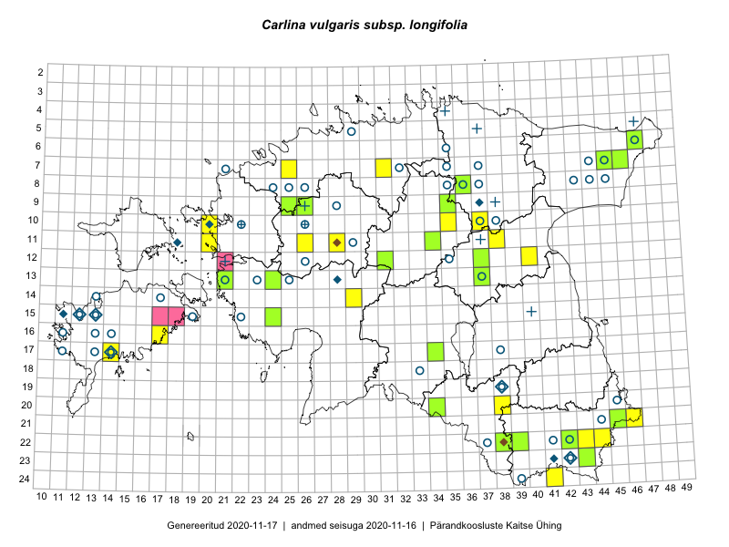

Carlina vulgaris subsp. longifolia — pikalehine keelikurohi
Asteraceae :: Carlina vulgaris subsp. longifolia (Rchb.) Nyman (105); Carlina longifolia Rchb. (30); Carlina vulgaris var. longifolia Korsh. (2)

Kaart põhineb 156 kirjel:
vaatlusi 44
herbaareksemplare 93
PKÜ kirjeid1 19
Taime kaasaegsed ja ajaloolised leiukohad asuvad 92 ruudus.
Tingmärgid ja leidudega ruutude arvud periooditi uues (u) ja 2005 andmestikus (v)
| █ | vahemik | u2 | v3 |
|---|---|---|---|
| █ | 2006–2020 | 38 | – |
| ◆/◇ | 1971–2005 | 9 | 7 |
| ○ | 1921–1970 | 52 | 8 |
| + | kuni 1920 | 9 | 0 |
| × | hävinud | – | 0 |
| ? | kaheldav | – | 0 |
| Ruut | Leidja(d) | Leiuaeg | Kirje |
|---|---|---|---|
| 14-29 | Mari Reitalu, Thea Kull | 2019-08-28 | ruut/ala: Carlina vulgaris subsp. longifolia (Rchb.) Nyman |
| 22-42 | Peedu Saar, Toomas Kukk | 2019-07-31 | TAA0149305: Carlina vulgaris subsp. longifolia (Rchb.) Nyman |
| 22-42 | Peedu Saar, Toomas Kukk | 2019-07-31 | TAA0149306: Carlina vulgaris subsp. longifolia (Rchb.) Nyman |
| 22-42 | Peedu Saar, Toomas Kukk | 2019-07-31 | TAA0149307: Carlina vulgaris subsp. longifolia (Rchb.) Nyman |
| 12-37 | Ulvi Selgis, Enn Selgis | 2019-07-20 | TAA0150002: Carlina vulgaris subsp. longifolia (Rchb.) Nyman |
| 23-43 | Ott Luuk, Tiit Hallikma | 2019-07-11 | TAA0150342: Carlina vulgaris subsp. longifolia (Rchb.) Nyman |
| 22-38 | Peedu Saar, Timo Luhamäe | 2019-07-10 | TAA0149287: Carlina vulgaris subsp. longifolia (Rchb.) Nyman |
| 07-25 | Mari Reitalu, Indrek Tammekänd | 2017-08-10 | ruut/ala: Carlina vulgaris subsp. longifolia (Rchb.) Nyman |
| 11-28 | Thea Kull, Ott Luuk | 2017-08-08 | punkt: Carlina vulgaris subsp. longifolia (Rchb.) Nyman |
| 11-28 | Ott Luuk, Thea Kull | 2017-08-08 | ruut/ala: Carlina vulgaris subsp. longifolia (Rchb.) Nyman |
| 09-26 | Meeli Mesipuu, Indrek Tammekänd | 2017-08-08 | ruut/ala: Carlina vulgaris subsp. longifolia (Rchb.) Nyman |
| 09-26 | Meeli Mesipuu, Indrek Tammekänd | 2017-08-08 | TAA0145026: Carlina vulgaris subsp. longifolia (Rchb.) Nyman |
| 11-34 | Ott Luuk, Thea Kull | 2017-08-03 | TAA0146007: Carlina vulgaris subsp. longifolia (Rchb.) Nyman |
| 22-39 | Peedu Saar, Ott Luuk | 2017-07-27 | TAA0141155: Carlina longifolia Rchb. |
| 20-38 | Ott Luuk, Peedu Saar | 2017-07-25 | ruut/ala: Carlina vulgaris subsp. longifolia (Rchb.) Nyman |
| 21-45 | Meeli Mesipuu | 2017-07-13 | TAA0145007: Carlina vulgaris subsp. longifolia (Rchb.) Nyman |
| 12-40 | Peedu Saar, Ott Luuk | 2017-05-18 | punkt: Carlina vulgaris subsp. longifolia (Rchb.) Nyman |
| 21-46 | Peedu Saar, Thea Kull | 2017-05-05 | punkt: Carlina vulgaris subsp. longifolia (Rchb.) Nyman |
| 22-44 | Karin Kikas, Peedu Saar | 2016-08-19 | punkt: Carlina vulgaris subsp. longifolia (Rchb.) Nyman |
| 17-14 | Toomas Kukk, Meeli Mesipuu, Johannes Kõdar | 2016-08-11 | ruut/ala: Carlina vulgaris subsp. longifolia (Rchb.) Nyman |
| 17-14 | Meeli Mesipuu, Toomas Kukk, Johannes Kõdar | 2016-08-11 | punkt: Carlina longifolia Rchb. |
| 22-43 | Thea Kull, Peedu Saar | 2016-08-04 | punkt: Carlina vulgaris subsp. longifolia (Rchb.) Nyman |
| 22-43 | Peedu Saar, Thea Kull | 2016-08-04 | ruut/ala: Carlina vulgaris subsp. longifolia (Rchb.) Nyman |
| 08-36 | Timo Luhamäe, Thea Kull | 2016-07-27 | TAA0142094: Carlina vulgaris subsp. longifolia (Rchb.) Nyman |
| 09-35 | Toomas Kukk, Tiit Hallikma | 2016-07-25 | TAA0137193: Carlina vulgaris subsp. longifolia (Rchb.) Nyman |
| 10-37 | Peedu Saar, Liina Oja, Susanna Vain | 2016-07-25 | ruut/ala: Carlina vulgaris subsp. longifolia (Rchb.) Nyman |
| 10-37 | Liina Oja, Peedu Saar, Susanna Vain | 2016-07-25 | punkt: Carlina longifolia Rchb. |
| 13-37 | Tarmo Niitla, Eeva-Maria Jeletsky | 2016-07-22 | TAA0136660: Carlina vulgaris subsp. longifolia (Rchb.) Nyman |
| 12-31 | Aat Sarv, Indrek Tammekänd | 2016-07-22 | TAA0139929: Carlina vulgaris subsp. longifolia (Rchb.) Nyman |
| 17-34 | Meeli Mesipuu, Toivo Sepp, Susanna Vain | 2016-07-20 | TAA0144179: Carlina vulgaris subsp. longifolia (Rchb.) Nyman |
| 07-31 | Toivo Sepp, Peedu Saar | 2016-07-18 | punkt: Carlina vulgaris subsp. longifolia (Rchb.) Nyman |
| 20-34 | Thea Kull, Eerik Leibak | 2016-07-18 | TAA0139406: Carlina vulgaris subsp. longifolia (Rchb.) Nyman |
| 07-31 | Peedu Saar, Toivo Sepp | 2016-07-18 | ruut/ala: Carlina vulgaris subsp. longifolia (Rchb.) Nyman |
| 13-24 | Peedu Saar, Timo Luhamäe, Johannes Kõdar | 2016-07-05 | TAA0133874: Carlina vulgaris subsp. longifolia (Rchb.) Nyman |
| 13-21 | Maret Gerz, Aat Sarv | 2016-07-05 | TAA0145386: Carlina vulgaris subsp. longifolia (Rchb.) Nyman |
| 24-41 | Ott Luuk, Sander Laherand, Susanna Vain | 2016-06-15 | ruut/ala: Carlina vulgaris subsp. longifolia (Rchb.) Nyman |
| 10-20 | Toomas Kukk, Peedu Saar | 2016-05-12 | ruut/ala: Carlina vulgaris subsp. longifolia (Rchb.) Nyman |
| 22-38 | Peedu Saar | 2015-10-01–2015-10-02 | ruut/ala: Carlina vulgaris subsp. longifolia (Rchb.) Nyman |
| 16-17 | Peedu Saar | 2015-09-07–2015-09-11 | ruut/ala: Carlina vulgaris subsp. longifolia (Rchb.) Nyman |
| 11-38 | Peedu Saar, Eerik Leibak | 2015-08-18 | punkt: Carlina vulgaris subsp. longifolia (Rchb.) Nyman |
| 11-38 | Peedu Saar, Eerik Leibak | 2015-08-18 | ruut/ala: Carlina vulgaris subsp. longifolia (Rchb.) Nyman |
| 09-25 | Tõnu Ploompuu | 2015-08-17 | TAA0118992: Carlina longifolia Rchb. |
| 09-25 | Meelis Muuga, Tõnu Ploompuu | 2015-08-17 | ruut/ala: Carlina vulgaris subsp. longifolia (Rchb.) Nyman |
| 11-20 | Hanna-Eliisa Luts, Tõnu Ploompuu | 2015-08-13 | punkt: Carlina vulgaris subsp. longifolia (Rchb.) Nyman |
| 23-43 | Peedu Saar, Ott Luuk | 2015-08-12 | TAA0116088: Carlina vulgaris subsp. longifolia (Rchb.) Nyman |
| 23-43 | Ott Luuk, Peedu Saar | 2015-08-12 | ruut/ala: Carlina vulgaris subsp. longifolia (Rchb.) Nyman |
| 15-24 | Maret Gerz, Leena Gerz | 2015-08-10 | TAA0132744: Carlina vulgaris subsp. longifolia (Rchb.) Nyman |
| 11-26 | Hanna-Eliisa Luts, Tõnu Ploompuu | 2015-07-28 | punkt: Carlina longifolia Rchb. |
| 11-26 | Hanna-Eliisa Luts, Tõnu Ploompuu | 2015-07-28 | punkt: Carlina longifolia Rchb. |
| 10-35 | Peedu Saar, Ott Luuk | 2015-07-27 | ruut/ala: Carlina vulgaris subsp. longifolia (Rchb.) Nyman |
| 10-35 | Ott Luuk, Peedu Saar | 2015-07-27 | punkt: Carlina vulgaris subsp. longifolia (Rchb.) Nyman |
| 07-46 | Peedu Saar, Liina Oja | 2015-07-23 | TAA0116092: Carlina vulgaris subsp. longifolia (Rchb.) Nyman |
| 06-47 | Jaak-Albert Metsoja | 2015-07-22 | TAA0140540: Carlina vulgaris subsp. longifolia (Rchb.) Nyman |
| 07-46 | Peedu Saar, Liina Oja | 2015-07-15 | TAA0116091: Carlina vulgaris subsp. longifolia (Rchb.) Nyman |
| 07-46 | Toomas Kukk, Tiit Hallikma, Meeli Mesipuu | 2015-05-31 | punkt: Carlina vulgaris subsp. longifolia (Rchb.) Nyman |
| 09-26 | Thea Kull, Meeli Mesipuu, Eerik Leibak | 2014-06-11 | ruut/ala: Carlina vulgaris subsp. longifolia (Rchb.) Nyman |
| 09-25 | Thea Kull, Meeli Mesipuu, Eerik Leibak | 2014-06-11 | ruut/ala: Carlina vulgaris subsp. longifolia (Rchb.) Nyman |
| 22-38 | Meeli Mesipuu, Thea Kull | 2007-10-11 | PKÜ: 14092 |
| 22-38 | Meeli Mesipuu | 2007-10-11 | PKÜ: 14093 |
| 22-38 | Meeli Mesipuu, Thea Kull | 2007-10-09 | PKÜ: 14232 |
| 22-39 | Meeli Mesipuu | 2007-09-12 | PKÜ: 14184 |
| 22-39 | Meeli Mesipuu | 2007-09-12 | PKÜ: 14188 |
| 22-39 | Meeli Mesipuu | 2007-09-12 | PKÜ: 14185 |
| 22-39 | Meeli Mesipuu | 2007-09-01 | PKÜ: 14174 |
| 22-38 | Meeli Mesipuu | 2007-09-01 | PKÜ: 14211 |
| 22-38 | Meeli Mesipuu | 2007-09-01 | PKÜ: 14210 |
| 22-38 | Meeli Mesipuu | 2007-09-01 | PKÜ: 14214 |
| 22-38 | Meeli Mesipuu, Tsipe Aavik | 2004-07-06 | PKÜ: 11822 |
| 22-38 | Meeli Mesipuu, Tsipe Aavik | 2004-07-06 | PKÜ: 11823 |
| 22-38 | Meeli Mesipuu, Tsipe Aavik | 2004-07-06 | PKÜ: 11821 |
| 19-38 | Malle Leht, Raivo Leht | 2003-07-24 | PKÜ: 11200 |
| 23-41 | Tiiu Kull, Meeli Mesipuu | 2002-07-21 | TAA0006307: Carlina vulgaris subsp. longifolia (Rchb.) Nyman |
| 11-28 | Meeli Mesipuu, Hannes Pehlak | 2001-08-11 | PKÜ: 7656 |
| 23-42 | Ülle Reier, Priit Holtsmann | 2000-08-10 | PKÜ: 6835 |
| 15-13 | Mari Reitalu, Tiina Ojala | 2000-07-25 | PKÜ: 1238 |
| 15-13 | Mari Reitalu, Tõnu Talvi | 1999-10-19 | PKÜ: 1217 |
| 15-12 | Mari Reitalu, Tiina Ojala | 1999-09-23 | PKÜ: 1242 |
| 13-28 | Toomas Kukk | 1989-08-02 | TAA0006304: Carlina vulgaris subsp. longifolia (Rchb.) Nyman |
| 10-20 | Linda Viljasoo | 1982-08-20 | TAA0006300: Carlina vulgaris subsp. longifolia (Rchb.) Nyman |
| 13-37 | Liivia Laasimer, V. Puusepp | 1966-06-23 | TAA0006280: Carlina vulgaris subsp. longifolia (Rchb.) Nyman |
| 24-39 | M. Kask | 1965-06-11–1971-08-15 | ruut/ala: Carlina longifolia Rchb. |
| 13-21 | Maret Kask | 1964-07-14 | TAA0006227: Carlina vulgaris subsp. longifolia (Rchb.) Nyman |
| 13-25 | A. Ojaveer, Haide-Ene Rebassoo | 1964-07-14 | TAA0006290: Carlina vulgaris subsp. longifolia (Rchb.) Nyman |
| 10-26 | Silvia Talts | 1964-06-22 | TAA0006303: Carlina vulgaris subsp. longifolia (Rchb.) Nyman |
| 11-29 | V. Puusepp, A. Saare | 1964-06-19 | TAA0006302: Carlina vulgaris subsp. longifolia (Rchb.) Nyman |
| 08-43 | Vilma Kuusk | 1963-06-26 | TAA0006284: Carlina vulgaris subsp. longifolia (Rchb.) Nyman |
| 13-21 | A. Ojaveer, H. Tamm | 1962-07-11 | TAA0006228: Carlina vulgaris subsp. longifolia (Rchb.) Nyman |
| 07-45 | Vilma Kuusk, A. Elvas | 1961-08-18 | TAA0006285: Carlina vulgaris subsp. longifolia (Rchb.) Nyman |
| 07-45 | Vilma Kuusk, Lõhmus | 1961-08-14 | TAA0006293: Carlina vulgaris subsp. longifolia (Rchb.) Nyman |
| 08-44 | Vilma Kuusk, A. Lõhmus | 1961-08-14 | TAA0006276: Carlina vulgaris subsp. longifolia (Rchb.) Nyman |
| 08-45 | Silvia Talts, V. Hein | 1961-08-14 | TAA0006288: Carlina vulgaris subsp. longifolia (Rchb.) Nyman |
| 08-44 | A. Elias, M. Kask | 1961-08-14 | TAA0006294: Carlina vulgaris subsp. longifolia (Rchb.) Nyman |
| 22-42 | T. Timm | 1961-08-12 | TAA0006289: Carlina vulgaris subsp. longifolia (Rchb.) Nyman |
| 07-44 | E. Tammemägi | 1961-08-07 | TAA0006295: Carlina vulgaris subsp. longifolia (Rchb.) Nyman |
| 07-44 | A. Ojaveer, K. Lang | 1961-08-07 | TAA0006296: Carlina vulgaris subsp. longifolia (Rchb.) Nyman |
| 08-26 | H. Tappo, E. Tammemägi | 1960-08-10 | TAA0006292: Carlina vulgaris subsp. longifolia (Rchb.) Nyman |
| 08-25 | K. Olspert | 1960-08-05 | TAA0006298: Carlina vulgaris subsp. longifolia (Rchb.) Nyman |
| 08-24 | H. Tappo, E. Tammemägi | 1960-08-05 | TAA0006275: Carlina vulgaris subsp. longifolia (Rchb.) Nyman |
| 10-22 | H. Tamm, T. Sütt | 1960-07-21 | TAA0006187: Carlina vulgaris subsp. longifolia (Rchb.) Nyman |
| 08-36 | Liivia Laasimer, Vilma Kuusk | 1960-07-19 | TAA0006279: Carlina vulgaris subsp. longifolia (Rchb.) Nyman |
| 07-21 | Vilma Kuusk, Viiu Hein | 1960-07-13 | TAA0006282: Carlina vulgaris var. longifolia Korsh. |
| 23-42 | L. Pihlapuu | 1959-08-12 | TU362271: Carlina vulgaris subsp. longifolia (Rchb.) Nyman |
| 18-33 | Linda Viljasoo | 1959-08-10 | TAA0006287: Carlina vulgaris subsp. longifolia (Rchb.) Nyman |
| 07-32 | E. Tammemägi | 1958-08-19 | TAA0006214: Carlina vulgaris subsp. longifolia (Rchb.) Nyman |
| 07-32 | E. Tammemägi | 1958-08-19 | TAA0006215: Carlina vulgaris subsp. longifolia (Rchb.) Nyman |
| 06-35 | V. Puusepp, A. Saare | 1958-08-11 | TAA0006225: Carlina vulgaris subsp. longifolia (Rchb.) Nyman |
| 08-35 | V. Puusepp, A. Saare | 1958-08-06 | TAA0006286: Carlina vulgaris subsp. longifolia (Rchb.) Nyman |
| 07-35 | V. Puusepp, A. Saare | 1958-08-04 | TAA0006224: Carlina vulgaris subsp. longifolia (Rchb.) Nyman |
| 07-35 | E. Tammemägi | 1958-08-04 | TAA0006226: Carlina vulgaris subsp. longifolia (Rchb.) Nyman |
| 07-35 | E. Tammemägi | 1958-08-04 | TAA0006306: Carlina vulgaris subsp. longifolia (Rchb.) Nyman |
| 22-37 | Linda Viljasoo | 1957-08-14 | TAA0006297: Carlina vulgaris subsp. longifolia (Rchb.) Nyman |
| 22-41 | Linda Viljasoo | 1957-07-30 | TAA0006305: Carlina vulgaris subsp. longifolia (Rchb.) Nyman |
| 21-44 | E. Kask, H. Tamm | 1957-06-27 | TAA0006223: Carlina vulgaris subsp. longifolia (Rchb.) Nyman |
| 17-38 | Maret Kask | 1956-08-29 | TAA0006291: Carlina vulgaris subsp. longifolia (Rchb.) Nyman |
| 10-37 | Linda Viljasoo | 1956-08-01 | TAA0006278: Carlina vulgaris subsp. longifolia (Rchb.) Nyman |
| 10-38 | Linda Viljasoo | 1956-07-31 | TAA0006188: Carlina vulgaris subsp. longifolia (Rchb.) Nyman |
| 07-37 | botaaniline ekspeditsioon ZBI | 1947-07-24 | TAA0006299: Carlina vulgaris var. longifolia Korsh. |
| 15-13 | B. Saarsoo | 1939-07-09–1939-08-13 | ruut/ala: Carlina longifolia Rchb. |
| 15-19 | B. Saarsoo | 1938-06-25–1938-06-27 | ruut/ala: Carlina longifolia Rchb. |
| 14-13 | B. Saarsoo | 1938-05-28–1938-07 | ruut/ala: Carlina longifolia Rchb. |
| 17-14 | B. Saarsoo | 1937–1938 | ruut/ala: Carlina longifolia Rchb. |
| 17-38 | Albert Üksip | 1936-07-07 | TU362269: Carlina vulgaris subsp. longifolia (Rchb.) Nyman |
| 16-13 | B. Saarsoo | 1936-07–1937-06 | ruut/ala: Carlina longifolia Rchb. |
| 08-37 | Silvia Talts | 1936-07 | TAA0006277: Carlina vulgaris subsp. longifolia (Rchb.) Nyman |
| 16-11 | B. Saarsoo | 1936-06–1937-08 | ruut/ala: Carlina longifolia Rchb. |
| 16-14 | B. Saarsoo | 1936-06–1937-07 | ruut/ala: Carlina longifolia Rchb. |
| 17-13 | B. Saarsoo | 1936–1938 | ruut/ala: Carlina longifolia Rchb. |
| 05-29 | Gustav Vilbaste | 1935-07-23 | TAA0006246: Carlina vulgaris subsp. longifolia (Rchb.) Nyman |
| 07-35 | August Miljan | 1935-07-14 | TAA0006301: Carlina vulgaris subsp. longifolia (Rchb.) Nyman |
| 09-28 | Gustav Vilbaste | 1935-07-12 | TAA0006205: Carlina vulgaris subsp. longifolia (Rchb.) Nyman |
| 17-11 | B. Saarsoo | 1934-07–1934-10 | ruut/ala: Carlina longifolia Rchb. |
| 14-17 | B. Saarsoo, A. Tomson | 1934 | ruut/ala: Carlina longifolia Rchb. |
| 15-12 | Erik Sits | 1933-08-30 | TAM0004525: Carlina longifolia Rchb. |
| 15-12 | Erik Sits | 1933-08-30 | TAM0004526: Carlina longifolia Rchb. |
| 13-23 | Gustav Vilbaste | 1933-07-19 | TAA0006210: Carlina vulgaris subsp. longifolia (Rchb.) Nyman |
| 15-22 | Gustav Vilbaste | 1933-07-09 | TAA0006231: Carlina vulgaris subsp. longifolia (Rchb.) Nyman |
| 12-26 | Gustav Vilbaste | 1933-06-30 | TAA0006209: Carlina vulgaris subsp. longifolia (Rchb.) Nyman |
| 07-35 | Gustav Vilbaste | 1932-07-04 | TAA0006253: Carlina vulgaris subsp. longifolia (Rchb.) Nyman |
| 12-35 | Gustav Vilbaste | 1932-06-21 | TAA0006247: Carlina vulgaris subsp. longifolia (Rchb.) Nyman |
| 19-38 | Gustav Vilbaste | 1931-06-29 | TAA0006254: Carlina vulgaris subsp. longifolia (Rchb.) Nyman |
| 07-35 | J. Lunts, Gustav Vilbaste | 1931 | TAA0006249: Carlina vulgaris subsp. longifolia (Rchb.) Nyman |
| 20-45 | Gustav Vilbaste | 1930-08-23 | TAA0006255: Carlina vulgaris subsp. longifolia (Rchb.) Nyman |
| 06-47 | Gustav Vilbaste | 1929-08-01 | TAA0007196: Carlina vulgaris subsp. longifolia (Rchb.) Nyman |
| 06-47 | Gustav Vilbaste | 1929-08-01 | TAA0007197: Carlina vulgaris subsp. longifolia (Rchb.) Nyman |
| 06-47 | Gustav Vilbaste | 1929-08-01 | TAA0007198: Carlina vulgaris subsp. longifolia (Rchb.) Nyman |
| 05-47 | G. Pahnsch | 1879-07-27 | TAM0115345: Carlina longifolia Rchb. |
| 05-37 | G. Pahnsch | 1879-07-26 | TAM0115347: Carlina longifolia Rchb. |
| 09-26 | G. Pahnsch | 1877-07-24 | TAM0115338: Carlina longifolia Rchb. |
| 09-26 | G. Pahnsch | 1877-07-18 | TAM0115339: Carlina longifolia Rchb. |
| 09-26 | G. Pahnsch | 1877-07-07 | TAM0115337: Carlina longifolia Rchb. |
| 04-35 | G. Pahnsch | 1873-07-31 | TAM0115348: Carlina longifolia Rchb. |
| 09-38 | G. Pahnsch | 1869-08-07 | TAM0115346: Carlina longifolia Rchb. |
| 11-37 | G. Pahnsch | 1868-08-03 | TAM0115350: Carlina longifolia Rchb. |
| 15-40 | P. Glehn | 1858 | TAM0115349: Carlina longifolia Rchb. |
| 10-22 | Th. Frese | 1855 | TAM0115335: Carlina longifolia Rchb. |
| 12-21 | Hasselbladt | TAM0115332: Carlina longifolia Rchb. |
Pärandkoosluste Kaitse Ühingu (PKÜ) andmebaas sisaldab inventeeritud koosluste kirjeldusi ja liigiloendeid. Kõige enam on andmeid niidutaimede kohta.↩︎
Ruutude arv uue atlase andmekogu järgi. Muuhulgas arvestab vanemat herbaariumi, 2005. aasta atlase välitöölehtedelt uuesti digitaliseeritud andmeid jne. Uue atlase andmekogust pärinevad andmed on kaardile kantud siniste sümbolitega.↩︎
Ruutude arv 2005. aasta atlase (Kukk, T., Kull, T., Eesti taimede levikuatlas. Eesti Maaülikool, Põllumajandus- ja Keskkonnainstituut, Tartu, 2005) järgi. Andmeallikana on kasutatud levik.exe programmi, kus igas ruudus on registreeritud vaid uusim leid. Seetõttu on vanemate perioodide kohta andmed puudulikud. Kasutatud levik.exe andmestikus leidub mõningaid kõrvalekaldeid atlase trükis ilmunud versioonist, sagedamini tarnade ja käpaliste seas. Lisaks leidub selles andmestikus valik liike (peamiselt väheste leidudega tulnuktaimed), mille kaarte trükis ei avaldatud. Vana atlase andmed ruutudest, milles ei ole uue atlase andmekogus leide enne 2006. aastat, on kaardil esitatud punaste sümbolitega. Vana atlase andmetel hävinud ja kaheldavaid leiukohti pole hilisemate (taas)leidude põhjal korrigeeritud.↩︎